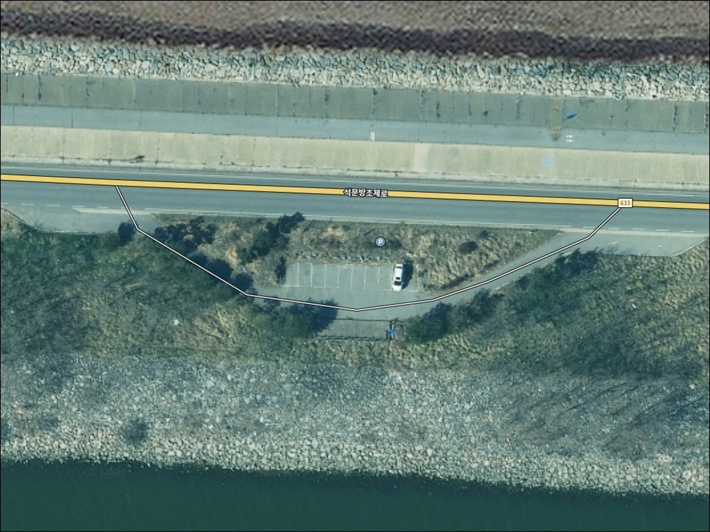
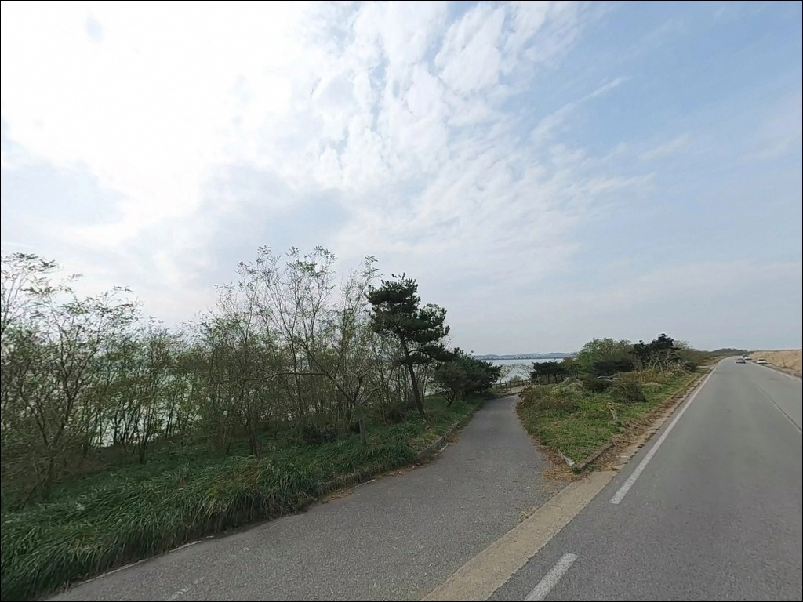
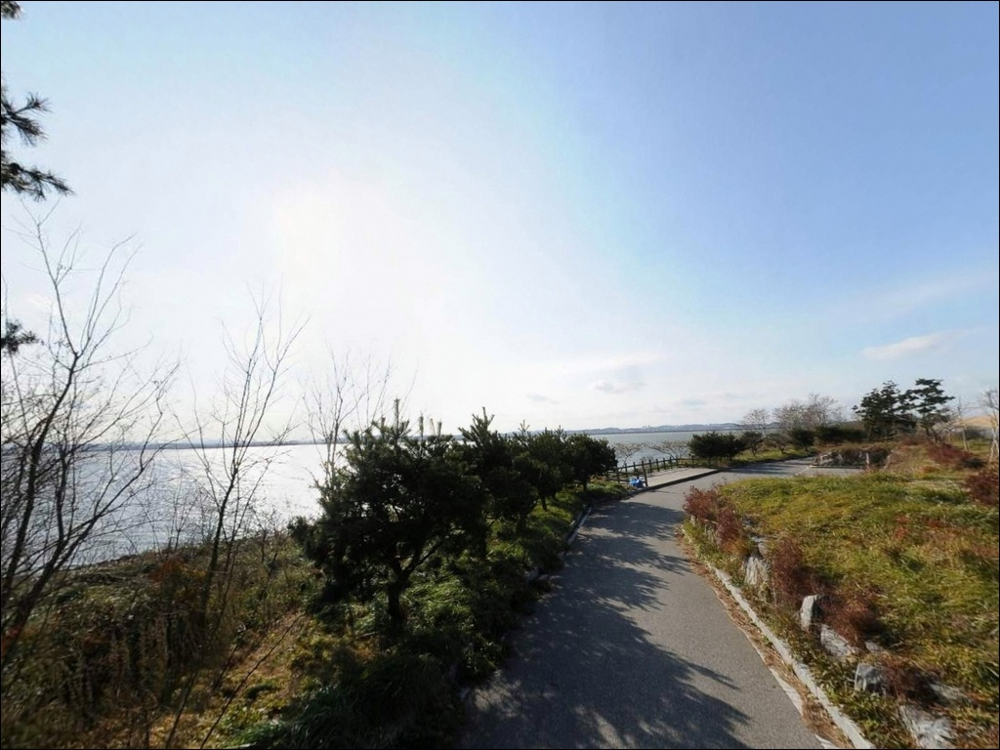
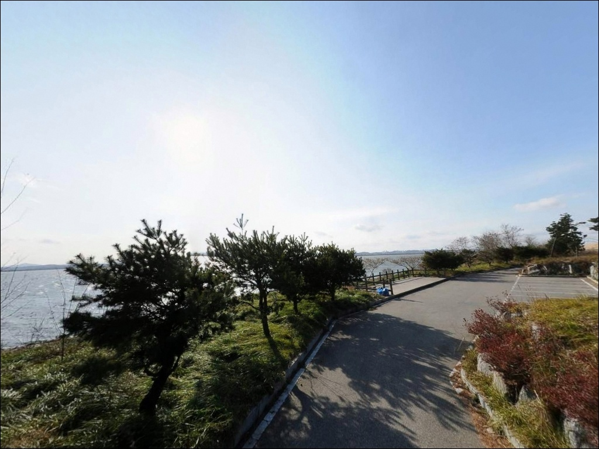
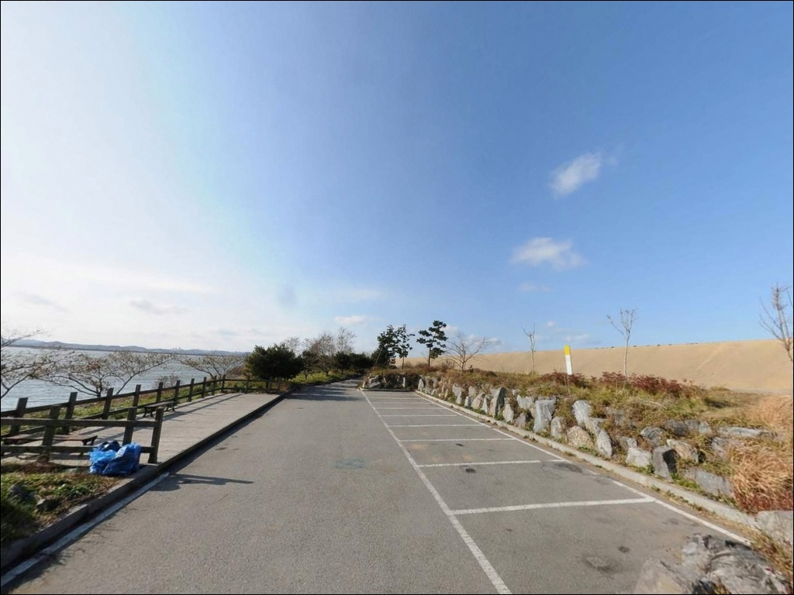
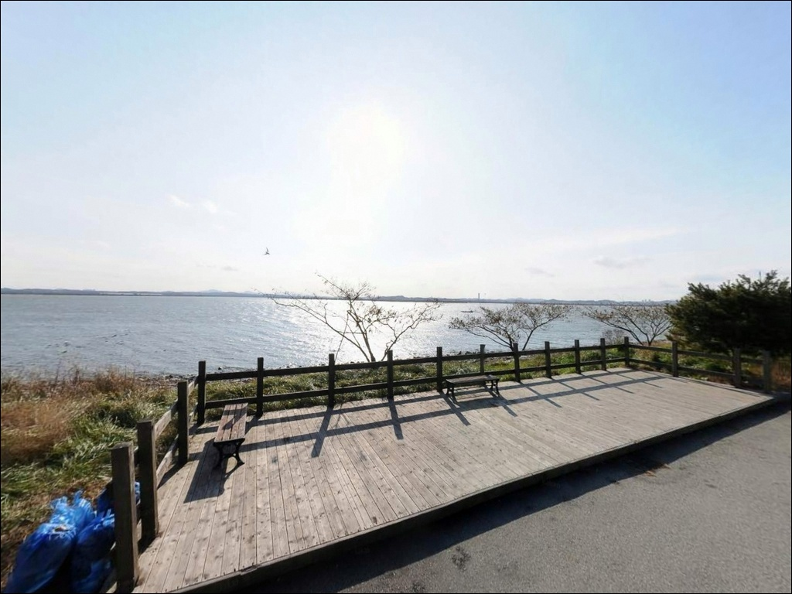
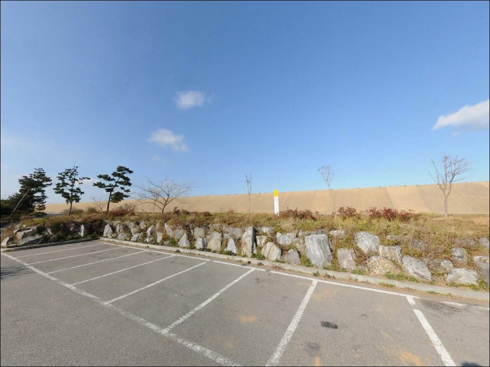
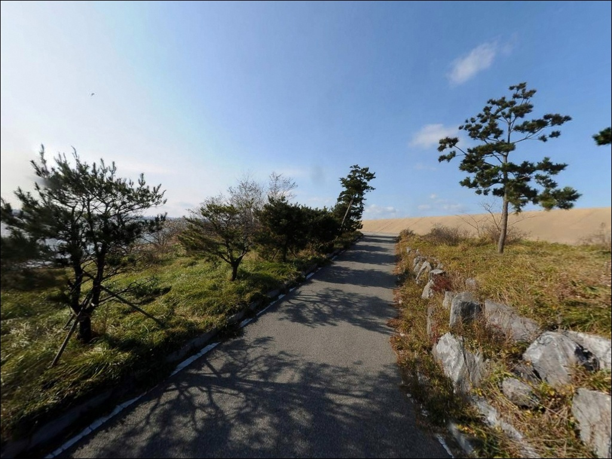
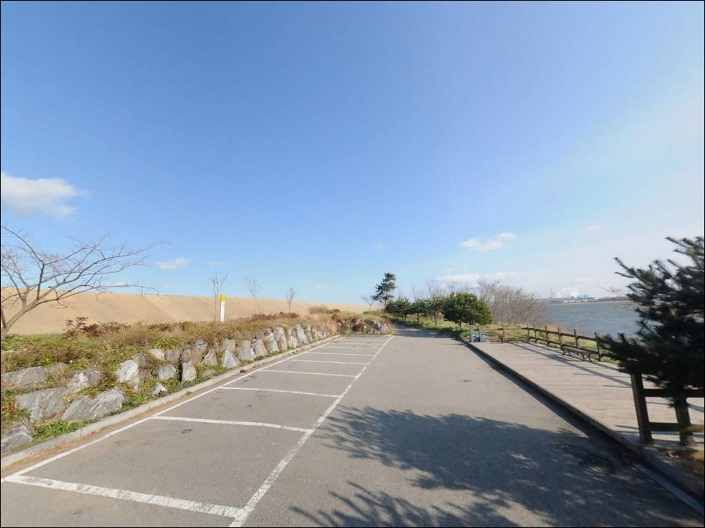

이 페이지에는 광고(제휴 링크 포함)가 있으며, 광고 링크를 통해 구매하면 운영자가 판매 수익 또는 수수료를 받을 수 있습니다. 포인트 사진: 카카오맵 스카이뷰·로드뷰. 이 페이지의 지도·사진 이미지는 카카오맵의 실제 서비스 이미지와 다를 수 있습니다.

석문방조제 중간 주차장 1
충남 당진시 송산면 가곡리 564
석문방조제에서 물때 확인 없이 석축으로 내려가면,
채비를 던지기도 전에 발판부터 잃게 됩니다.
간조 때 드러난 석축 돌무더기는 바닷물에
잠겼다 노출된 면이라 이끼가 두껍게 끼어 있고,
사리 전후에는 조류까지 강해져
원투·루어 모두 채비 컨트롤이 어려워집니다.
충남 당진시 송산면 가곡리에서
석문면 장고항리까지 약 10.6km를 잇는
석문방조제는 서해 서향 낚시꾼들 사이에서
광어·우럭·삼치 포인트로 알려진 대형 방조제입니다.
가곡리 564번지 중간 주차장 구간은
방조제 도로에서 석축으로 바로 접근할 수 있어
낚시 동선이 짧은 편입니다.
이 글은 석문방조제 중간 주차장 1 구간의
물때 판단 기준, 낚시 방식별 지형 적합성,
진입 여건에 집중합니다.
조황 단정이나 특정 어종 보장은
이 글의 범위에 포함되지 않습니다.

석문방조제는 차량 통행이 가능한
포장 2차선 제방 도로로 이루어져 있습니다.
수도권 방향에서 진입할 경우
가곡리 농수산물 직판매장 방향을 먼저 찍고
방조제 도로로 진입하는 동선이
처음 방문하는 경우 가장 혼동이 적은 경로입니다.
중간 주차장 1 지점은 방조제 진입 후
좌측에 주차 공간이 확인되는 위치로,
포켓형 주차 공간 구조상 상당수의
차량 수용이 가능한 편입니다.
회차 공간도 일정 부분 확보된 구조여서
대형 차량도 진입 자체는 가능하지만,
물때 좋은 주말에는 자리가 일찍 차는 경우가 많습니다.
석축 아래로 내려가는 계단이나 경사로가
일부 구간에 존재하는 것으로 보입니다.
석축은 물에 잠겼다 드러나는 구조여서
이끼와 해조류가 두껍게 붙어 있는 편이고,
낙상 사고가 반복적으로 발생하는 지형입니다.
석축 진입 가능 여부는 그날의 물때와 조위가 결정합니다.

석문방조제는 서해 외해와 석문호(담수호) 사이
제방 위에 도로가 형성된 구조입니다.
주변에 민가 밀집도가 낮아
야간에는 조용한 환경이 유지되는 편이지만,
서풍·북서풍을 막아줄 구조물이 없는
개방형 지형이라 바람 영향을 직접 받습니다.
방조제 위 차박 포인트는 이 구간 포함
총 4곳이 낚시인들 사이에 알려져 있습니다.
차량 차박 방문자가 꾸준히 찾는 곳이지만,
탁 트인 방조제 특성상 프라이버시는 낮고,
강풍 예보 시에는 차량 흔들림과 체감 기온 하락을
미리 감안해야 합니다.
야간에는 도로변 가로등이 드문드문 있으나,
석축 하단부는 조명이 미치지 않는 편입니다.
현지에서는 야간 석축 진입을 피하는 낚시 문화가
형성되어 있으며, 당진시가 일부 구간을
야간 출입통제 구역으로 지정하고 있어
현장 안내판과 통제 구간을 출발 전 확인해야 합니다.

당진 관광정보센터(충남 당진시 석문면 석문방조제로 1755)에
상시 개방 화장실이 있는 것이 확인됩니다.
중간 주차장 1 지점 바로 옆에 화장실이
있는지는 별도 확인이 필요하므로,
관광정보센터 위치를 미리 파악해 두는 것이
현실적인 준비입니다.
반경 3km 이내에 편의점이나 마트의
확정 정보는 확인되지 않습니다.
완전 자급 체제로 진입하는 것이 기본이며,
낚시 소품·식수·얼음은 출발 전에
모두 준비하고 오는 편이 안전합니다.
응급 상황이 발생할 경우 당진시내권까지
거리가 있는 편이라,
출발 전에 비상약품·연료·수분을 챙기는 것이
기본 준비입니다.
당진석문국가산업단지와 연결된 도로망이
인근에 형성되어 있어
긴급 이동 동선 파악은 어렵지 않은 편입니다.

석문방조제 방문 전에 가장 먼저 확인할 것은
물때입니다.
바다타임 석문방조제 구간 물때(620번)에서
사리·조금 구분과 당일 조위 변화를
출발 전 반드시 확인해야 합니다.
사리 전후 석문방조제 석축에서는 채비 조류를 버티기 어렵습니다.
조금 전후 또는 만조·간조 전환 시점이
이 포인트에서 낚시하기 좋은 타이밍입니다.
석축 진입을 계획하고 있다면
미끄럼 방지 신발은 선택이 아니라 필수입니다.
핀펠트화 또는 스파이크화를 착용하고,
구명조끼도 반드시 챙겨야 합니다.
야간 낚시는 석축 지형 특성상 위험도가
주간 대비 크게 높아지는 편이라
일몰 이후 석축 진입은 피하는 것이 기본 원칙입니다.
석축 앞 돌무더기 지형 특성상 밑걸림이 잦은 편이라
채비는 여분을 넉넉하게 준비해야 합니다.
기상청 예보와 바람 세기도 출발 당일 아침 재확인하는 것이
헛걸음을 막는 기본 절차입니다.
당진시가 지정한 야간 출입통제 구간도
출발 전 안내판이나 공지로 미리 확인해 두는 것이 좋습니다.

석문방조제 중간 주차장 1 구간은
한쪽은 서해 외해, 반대쪽은 석문호(담수호)로
양쪽 수역이 분리된 구조입니다.
낚시 포인트는 주로 외해 방향 석축 전면이며,
간조가 되면 석축 앞 돌무더기가
수면 위로 드러나면서 공략 지점이 구체화됩니다.
만조 시에는 수심 5~8m 안팎으로 추정되는 구간입니다.
석축과 그 앞에 쌓인 돌무더기 구조는
어류가 은신하기 좋은 지형 조건을 갖추고 있습니다.
구간별로 수문 방향 조류 영향이 다르게 나타나며,
수문 근처 구간은 초들물에서 중들물 사이에
조류 흐름이 살아나는 시간대가 있는 것으로 알려져 있습니다.
중간 주차장 앞 구간은 중썰물에서 간조 전후가
입질 기대 타이밍으로 알려진 편입니다.
밑걸림은 이 포인트의 가장 큰 변수입니다.
석축 바로 앞보다 채비를 멀리 보내
돌무더기 경계선 바깥을 탐색하는 방식이
낚시 효율을 높이는 데 유리합니다.
외해 방향 석축 끝단은 조류 변화를 직접 받아
루어 반응이 살아나는 자리입니다.
가기 전에 최신 조황은 꼭 검색해 보시기 바랍니다.

이 포인트에서 가장 많이 운용되는 방식은
루어낚시입니다.
프리리그·지그헤드에 웜 계열 채비를 달아
석축 앞 돌무더기 경계 구간을 공략하는 방식이
광어·우럭을 노리는 데 적합한 편입니다.
밑걸림을 감안해 채비 무게는 가볍게 시작하고
바닥층을 천천히 훑는 방식이 기본 전략입니다.
원투낚시란 무거운 봉돌을 달아 채비를 멀리 던진 뒤
바닥 어종의 입질을 기다리는 낚시 방식입니다.
직선 방조제 특성상 캐스팅 공간이 넓어
원투 거리 확보에 유리하며,
청갯지렁이·크릴새우 미끼 조합으로
망둥어·붕장어·노래미를 노리는 채비가
이 구간에서 자주 운용되는 편입니다.
조류가 느려지는 정조 타이밍에
채비를 멀리 보내 돌무더기 외곽을 탐색하는 방식이 유효합니다.
삼치 메탈지그 캐스팅은
9월부터 11월 초순 사이에 기대해 볼 수 있는
방식입니다.
수문 근처 구간에서 히트 사례가 알려져 있으며,
삼치 시즌은 조황 변화가 빠른 편이라
출조 전 검색으로 현황을 먼저 파악하는 것이
좋습니다.

석문방조제 중간 주차장 1 자리가 이미 차 있거나
조류가 너무 강해 석축 진입이 어려울 때는
성구미방파제가 첫 번째 대안입니다.
방조제 진입로 바로 앞에 위치한 방파제 구조로,
석축 대비 발판이 안정적인 편이어서
초행이라면 먼저 들러 분위기를 확인하는
동선도 유효합니다.
장고항은 약 8~10km 거리에 위치한
당진시 석문면 어촌 항구입니다.
워킹 포인트 외에 선상낚시 출조 기지로도
운영되어 우럭·노래미·광어 등을
다양한 방식으로 노릴 수 있습니다.
석문방조제 조류가 너무 강한 날이라면
장고항을 기점으로 삼는 동선이
당일 낚시 계획을 살리는 방법입니다.
석문방조제 구간 내에서 이동한다면
방조제 초입 구간이나 데크 쉼터 인근 구간이
지형 여건이 조금 다른 편이라
비교 탐색 대상으로 활용할 수 있습니다.
석문선착장도 같은 해안선에 위치해 있어
중간 주차장 1이 혼잡할 때 보조 포인트로
참고할 수 있습니다.

루어낚시로 광어·우럭을 노리거나
원투로 붕장어·망둥어를 공략하는 낚시인이라면
석문방조제 중간 주차장 1 구간은
지형 조건이 잘 맞는 편입니다.
삼치 시즌에는 메탈지그 캐스팅까지
기대해 볼 수 있고, 직선 방조제 특성상
캐스팅 공간이 넓어 다양한 방식으로
운용이 가능합니다.
다만 물때 확인 없이 방문하거나
석축에 일반 운동화로 내려서면
낚시보다 사고가 먼저 일어날 수 있는 지형입니다.
바다타임 물때 확인, 미끄럼 방지 신발, 여분 채비,
이 세 가지를 갖추고 간다면
당진 서해 방조제 낚시의 매력을
제대로 경험할 수 있는 포인트입니다.
낚시를 마치고 방조제 위에 차를 세우고
서해 방향을 바라보며 하룻밤 머무는
차박 여행자라면,
야간 통제 구간과 바람 방향만 미리 확인해 두면
낚시와 차박을 나란히 즐길 수 있는
출조가 될 것입니다.